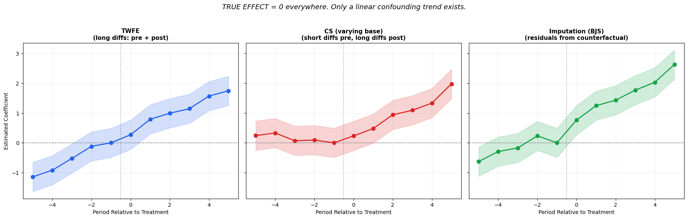

Interpreting Event Studies Across Modern DiD Methods
Causal Inference
Difference-in-Differences
Event Studies
Python
Author
Daniel Redel
Published
February 18, 2026
Modern event study plots are the go-to visualization for Difference-in-Differences analysis. But when you overlay results from multiple estimators — Dynamic TWFE, Sun-Abraham, Callaway-Sant’Anna, Imputation DiD — the coefficients may not mean the same thing, even if they look the same visually.
Multi-model comparisons can go wrong in several ways. In this post, we focus on three practical questions:
Which estimator should I use? A quick guide to when each modern DiD estimator is appropriate
How are event study coefficients constructed? The long vs. short difference distinction, and the “kink” artifact it creates (Roth, 2026)
What about the control group? Why the choice of never-treated vs. not-yet-treated matters for cross-estimator comparisons
import numpy as npimport pandas as pdimport matplotlib.pyplot as pltimport warningswarnings.filterwarnings("ignore")np.random.seed(42)
c:\Users\danny\anaconda3\Lib\site-packages\pandas\core\computation\expressions.py:22: UserWarning: Pandas requires version '2.10.2' or newer of 'numexpr' (version '2.8.7' currently installed).
from pandas.core.computation.check import NUMEXPR_INSTALLED
c:\Users\danny\anaconda3\Lib\site-packages\pandas\core\arrays\masked.py:56: UserWarning: Pandas requires version '1.4.2' or newer of 'bottleneck' (version '1.3.7' currently installed).
from pandas.core import (
2 Which Estimator When?
Before diving into the technical details, here is a practical guide. Modern DiD offers six main estimators for staggered designs. They differ in how they handle treatment effect heterogeneity, what comparison group they use, and how efficient they are.
2.1 The Landscape
Estimator
Approach
Handles Heterogeneous Effects?
Efficiency
Best For
Dynamic TWFE
Single regression with time dummies
No — biased under heterogeneity
High (if valid)
Simultaneous adoption only
Callaway-Sant’Anna
2$$2 DiD aggregation
Yes
Moderate
Primary staggered estimator; flexible aggregation
Sun-Abraham
Interaction-weighted regression
Yes
Moderate
Robustness check alongside CS
Imputation / BJS
Impute counterfactuals, then aggregate
Yes
Highest (~50% shorter CIs)
Preferred when efficiency matters
Two-Stage DiD (Gardner)
Residualize on untreated, then regress
Yes
Highest (same point estimates as BJS)
Alternative to BJS with GMM variance
Synthetic DiD
Reweight controls to match treated pre-trends
Yes
Varies
Few treated units; questionable parallel trends
2.2 Decision Tree
Is treatment adopted at the same time by all units?
Yes\rightarrow Dynamic TWFE is fine (no staggered-adoption bias). Use MultiPeriodDiD.
No (staggered)\rightarrow continue below.
Do you want the most efficient estimates?
Yes\rightarrowImputation DiD (or equivalently Two-Stage DiD). These produce the shortest confidence intervals under homogeneous treatment effects. Use as your primary estimator.
No / want robustness\rightarrow continue below.
Primary analysis or robustness check?
Primary\rightarrowCallaway-Sant’Anna. Most flexible: supports doubly robust estimation, covariates, and multiple aggregation schemes.
Robustness\rightarrowSun-Abraham. If CS and SA agree, results are more credible. If they disagree, investigate heterogeneity.
Very few treated units or poor parallel trends?
Yes\rightarrow Consider Synthetic DiD or TROP. These reweight controls to match the treated unit’s pre-treatment trajectory.
2.3 When Results Should Agree
Under parallel trends and homogeneous treatment effects, all estimators should produce similar point estimates. When they diverge, it typically signals:
Treatment effect heterogeneity across cohorts or over time
Parallel trends violations (different estimators are more or less sensitive)
Different comparison populations (never-treated vs. not-yet-treated — more on this in Section 7)
3 Long vs. Short Differences
Consider a simple 2-group DiD setup with treatment starting at t=0 and reference period t=-1. Define the group difference at each time t:
Every period is compared to the same baseline (t=-1). So \hat{\beta}_{-5} answers: “how different was the treated-control gap at t=-5 compared to t=-1?”
Short difference (relative to the preceding period):
Each period is compared to its immediate neighbor. So \hat{\beta}_{-5} answers: “how much did the treated-control gap change between t=-6 and t=-5?“
These are fundamentally different objects. Long differences cumulate deviations from a fixed point; short differences capture incremental changes.
3.1 Numerical Example
Let’s make this concrete. Suppose the treated-control gap \bar{Y}_t^D grows linearly in the pre-treatment period, then jumps at t=0 due to a treatment effect:
# Concrete example: gap grows linearly, then treatment kicks inperiods = np.array([-5, -4, -3, -2, -1, 0, 1, 2, 3])Y_gap = np.array([1.0, 1.5, 2.0, 2.5, 3.0, 6.0, 7.0, 8.0, 9.0])ref =-1ref_idx = np.where(periods == ref)[0][0]# Long differences: each period vs fixed reference (t=-1)beta_long = Y_gap - Y_gap[ref_idx]# Short differences: each period vs its immediate predecessorbeta_short = np.full(len(periods), np.nan)for i inrange(1, len(periods)): beta_short[i] = Y_gap[i] - Y_gap[i-1]example = pd.DataFrame({'period': periods,'Y_gap': Y_gap,'beta_long (vs t=-1)': beta_long,'beta_short (vs t-1)': beta_short,})example
period
Y_gap
beta_long (vs t=-1)
beta_short (vs t-1)
0
-5
1.0
-2.0
NaN
1
-4
1.5
-1.5
0.5
2
-3
2.0
-1.0
0.5
3
-2
2.5
-0.5
0.5
4
-1
3.0
0.0
0.5
5
0
6.0
3.0
3.0
6
1
7.0
4.0
1.0
7
2
8.0
5.0
1.0
8
3
9.0
6.0
1.0
Notice the key difference:
Long diffs (pre-treatment): -2.0, -1.5, -1.0, -0.5, 0 — a clear downward-to-zero slope revealing the linear pre-trend violation
Short diffs (pre-treatment): 0.5, 0.5, 0.5, 0.5 — constant and seemingly harmless
Both representations contain the same information, but the visual impression is very different. A linear pre-trend violation is immediately visible with long differences (the coefficients trend toward the reference), but hidden with short differences (the coefficients look flat).
This distinction becomes critical when we mix estimators that use different constructions on the same plot.
Figure 1: Long differences (left) reveal the pre-trend violation as a slope; short differences (right) flatten it into a constant.
4 How Each Estimator Constructs Event Study Coefficients
All modern DiD estimators produce event study coefficients \hat{\beta}_e indexed by relative time e (periods relative to treatment). All normalize \hat{\beta}_{-1} = 0 at the reference period. But how they build the other coefficients differs.
4.1 Dynamic TWFE
Reference: Last pre-period (e=-1), dropped from the regression.
Then aggregates: \hat{\beta}_e = \sum_g w_{g,e} \cdot \hat{\delta}_{g,e} (interaction-weighted average).
All \beta_e are still long differences relative to e=-1, just with proper heterogeneity handling.
Bottom line: Sun-Abraham is TWFE done right. Same reference, same type of coefficient, same interpretation. “Dropping from regression” = normalizing to zero.
4.3 Callaway-Sant’Anna
Reference: e=-1 (the period before treatment for each cohort g).
Method: Builds group-time ATTs \widehat{ATT}(g,t) via 2$$2 DiD comparisons, then aggregates to an event study.
Here is where it gets tricky: CS has two modes for the base period:
4.3.1base_period='universal'
ALL coefficients (pre and post) use t = g-1 as the comparison period:
\hat{\beta}_e = \widehat{ATT}(g, g+e) \quad \text{where each ATT compares to } t=g-1
This is a long difference — same as TWFE / Sun-Abraham. Comparable: Yes.
4.3.2base_period='varying' (the default)
Post-treatment: Uses t=g-1 as comparison \rightarrowlong difference
Pre-treatment: Uses t-1 as comparison for each t\rightarrowshort difference
This means pre- and post-treatment coefficients are constructed with different formulas. The pre-treatment coefficients answer a different question than the post-treatment ones.
Comparable: Only post-treatment. Pre-treatment coefficients are a fundamentally different quantity.
4.4 Imputation DiD (Borusyak-Jaravel-Spiess) and Two-Stage DiD (Gardner)
This one works completely differently from the others. No regression with period dummies at all.
Method (two steps):
Estimate the counterfactual: Using only untreated observations (units before they get treated + never-treated), fit unit and time fixed effects: \hat{Y}_{it}(0) = \hat{\alpha}_i + \hat{\gamma}_t This gives a prediction of what Y would have been without treatment for every unit-time.
Compute individual treatment effects: For each treated observation: \hat{\tau}_{it} = Y_{it} - \hat{Y}_{it}(0) = Y_{it} - \hat{\alpha}_i - \hat{\gamma}_t
Aggregate by horizon: Group the \hat{\tau}_{it} by relative time h = t - g_i and average: \hat{\beta}_h = \frac{1}{N_h} \sum_{i,t: t-g_i = h} \hat{\tau}_{it}
Reference period: BJS doesn’t naturally produce a coefficient at h=-1. Since at h=-1 no unit is yet treated, there are no \hat{\tau}_{it} to aggregate. The code manually sets\hat{\beta}_{-1} = 0 for plotting.
Pre-treatment coefficients (h < -1): These are placebo tests — they show Y - \hat{Y}(0) for periods before treatment. If the model is correctly specified, these should be \approx 0. They are not “differences relative to a reference period” — they are direct residuals from the counterfactual model.
Comparable: Post-treatment yes (same estimand: ATT at each relative time). Pre-treatment: similar scale but different interpretation (model specification test, not parallel trends relative to a reference).
Gardner’s Two-Stage DiD
Gardner (2022) proposes an equivalent two-step procedure: (1) residualize outcomes using FE estimated on untreated observations, (2) regress residuals on treatment indicators. The point estimates are identical to Imputation DiD. The only difference is variance estimation: Gardner uses a GMM sandwich estimator (accounting for first-stage estimation error), while BJS uses a conservative variance (Theorem 3). For event study comparison purposes, they are interchangeable.
5 The “Kink” Artifact
Now that we understand the difference between long and short differences, let’s see why it matters visually.
Consider a scenario with a linear pre-trend violation (the treated-control gap grows by 0.3 each period) but no treatment effect at all. The confounding trend continues smoothly through the treatment date — there is no break in the data-generating process.
The question is: how does each estimator’s event study plot represent this smooth, continuous confound?
Roth (2026) calls this the “kink” artifact: because CS (varying) uses short differences in the pre-treatment period but long differences in the post-treatment period, the same smooth linear confound produces a visual break at the treatment date — a kink that looks like a treatment effect, even though the underlying trend is continuous.
Code
# Simulate: linear pre-trend violation, NO treatment effectnp.random.seed(42)periods_sim = np.arange(-5, 6)ref =-1# True confounding: gap grows linearly at 0.3 per period# There is NO treatment effect -- just a trend violationdelta_true =0.3* periods_simse_sim = np.full(len(periods_sim), 0.25)noise =lambda: np.random.normal(0, 0.12, len(periods_sim))# 1. TWFE: ALL coefficients are long diffs vs e=-1# beta_t = 0.3*t - 0.3*(-1) = 0.3*(t+1)twfe_coefs = delta_true - delta_true[periods_sim == ref][0] + noise()twfe_coefs[periods_sim == ref] =0.0# 2. CS (varying): pre = SHORT diffs (constant), post = LONG diffscs_coefs = np.zeros(len(periods_sim))for i, p inenumerate(periods_sim):if p < ref: cs_coefs[i] =0.3+ np.random.normal(0, 0.12)elif p == ref: cs_coefs[i] =0.0else: cs_coefs[i] =0.3* (p - ref) + np.random.normal(0, 0.12)# 3. Imputation (BJS): residuals from counterfactual modelavg_delta_pre = np.mean(delta_true[periods_sim <0])bjs_coefs = delta_true - avg_delta_pre + noise()bjs_coefs[periods_sim == ref] =0.0fig, axes = plt.subplots(1, 3, figsize=(18, 5.5), sharey=True)colors = ['#2563eb', '#dc2626', '#16a34a']titles = ['TWFE\n(long diffs: pre + post)','CS (varying base)\n(short diffs pre, long diffs post)','Imputation (BJS)\n(residuals from counterfactual)',]coefs_list = [twfe_coefs, cs_coefs, bjs_coefs]for ax, coefs, title, color inzip(axes, coefs_list, titles, colors): ax.fill_between(periods_sim, coefs -1.96*se_sim, coefs +1.96*se_sim, alpha=0.2, color=color) ax.plot(periods_sim, coefs, 'o-', color=color, markersize=7, linewidth=2, zorder=3) ax.axhline(0, color='gray', linestyle='--', linewidth=1) ax.axvline(ref +0.5, color='gray', linestyle=':', linewidth=1.5, alpha=0.7) ax.set_title(title, fontsize=11, fontweight='bold') ax.set_xlabel('Period Relative to Treatment')if ax == axes[0]: ax.set_ylabel('Estimated Coefficient') ax.grid(True, alpha=0.2)fig.suptitle('TRUE EFFECT = 0 everywhere. Only a linear confounding trend exists.', fontsize=13, y=1.03, style='italic')plt.tight_layout()plt.show()

Figure 2: The kink artifact: with no treatment effect and only a linear confounding trend, all panels show positive post-treatment coefficients (that’s the confound, not an effect). The key: TWFE shows a smooth continuous line with no break at the treatment date, while CS (varying) creates an artificial kink.
What you see in Figure 2 — remember, the true effect is zero in all three panels; the only thing happening is a linear confounding trend (gap grows by 0.3 per period, continuously through the treatment date):
TWFE (left): A smooth upward line passing through zero at the reference period. The trend is visible both pre- and post-treatment with no break at the treatment date. This correctly reveals the confound: “the gap was growing before treatment and kept growing after — there’s no discontinuity suggesting a treatment effect.”
CS (varying) (center): Flat pre-trends (\approx 0.3 each) then a sudden jump post-treatment. This looks like a treatment effect, but it’s entirely an artifact. Short differences flatten the linear trend into a constant in the pre-period, then the switch to long differences in the post-period creates a visual break. A researcher seeing “flat pre-trends + post-treatment jump” might wrongly conclude that treatment had an effect.
BJS (right): An upward trend both pre- and post-treatment, similar in shape to TWFE but normalized differently (centered around the counterfactual model’s average rather than the reference period). No break at the treatment date — correctly showing the continuous confound.
The key visual diagnostic: under a pure linear confound with no treatment, the event study should show a smooth, continuous line with no break at t=0. TWFE and BJS show this; CS (varying) does not.
6 Practical Guide: Which Comparisons Are Fair?
The following table summarizes the coefficient construction and control group of each estimator:
Estimator
Reference
Pre-treatment
Post-treatment
Control Group
Comparable to TWFE?
Dynamic TWFE
e=-1 (dropped)
Long diff vs. e=-1
Long diff vs. e=-1
All controls
Baseline
Sun-Abraham
e=-1 (dropped)
Long diff vs. e=-1
Long diff vs. e=-1
Configurable
Yes (match control group)
CS (universal)
e=-1 (fixed)
Long diff vs. e=-1
Long diff vs. e=-1
Configurable
Yes (match control group)
CS (varying)
e=-1 (fixed)
Short diff (e vs e-1)
Long diff vs. e=-1
Configurable
Post only
Imputation / BJS
e=-1 (set to 0)
Placebo residuals
Imputed \hat{\tau}
All untreated obs
Post yes, pre: different meaning
Two-Stage DiD
e=-1 (set to 0)
Same as BJS
Same as BJS
All untreated obs
Same as BJS
6.1 Rules of Thumb
Safe multi-model overlays:
TWFE + Sun-Abraham + CS (universal): Fully comparable, provided CS and SA use the same control_group. All use long differences relative to the same reference period.
Adding Imputation (BJS) or Two-Stage DiD: Post-treatment coefficients are comparable (same estimand). Pre-treatment coefficients are on a similar scale but have a different interpretation. Note that BJS always uses all untreated observations — closest to not_yet_treated.
Comparisons that require caution:
CS (varying) with any other estimator: Only post-treatment coefficients are comparable. Pre-treatment coefficients are short differences that will look different from everyone else’s long differences.
Mismatched control groups: If one estimator uses never_treated and another uses not_yet_treated, divergent results may reflect different comparison populations, not estimator disagreement.
Practical checklist before overlaying event studies:
Set base_period='universal' for Callaway-Sant’Anna
Match control_group across all estimators (CS, SA)
Note that BJS/Two-Stage DiD always uses all untreated observations
If using CS with base_period='varying', annotate the plot and do not visually compare pre-treatment coefficients
Figure 3: Multi-model overlay: CS (varying) produces visually misleading pre-trends when compared against TWFE and Sun-Abraham, both of which correctly show the pre-trend violation.
7 Control Group Choice: Never-Treated vs. Not-Yet-Treated
Beyond coefficient construction, there is a second dimension that affects multi-model comparability: which units serve as controls?
Callaway-Sant’Anna and Sun-Abraham both offer a control_group parameter with two options:
'never_treated' (default): Only units that never receive treatment serve as controls. This is the most conservative choice — it avoids contamination from units that will later be treated.
'not_yet_treated': Units that haven’t been treated yet at a given time serve as controls. This uses more data (especially useful when there are few never-treated units) but requires a stronger assumption: that treatment effects don’t spill over to future-treated units before they are treated.
7.1 Why This Matters for Multi-Model Comparisons
If you overlay two estimators that use different control groups, the estimates may diverge even if everything else is the same — because they are estimating treatment effects relative to different comparison populations:
Estimator A
Estimator B
Comparable?
CS (never_treated)
SA (never_treated)
Yes
CS (not_yet_treated)
SA (not_yet_treated)
Yes
CS (never_treated)
SA (not_yet_treated)
Caution — different comparison populations
Any staggered estimator
Imputation DiD / Two-Stage DiD
Caution — BJS always uses all untreated observations (analogous to not_yet_treated)
7.2 When Does the Choice Matter?
The two control groups give similar results when:
There are many never-treated units (so the not_yet_treated pool is dominated by them)
Treatment effects are homogeneous across cohorts
There are no anticipation effects
They diverge when:
Few never-treated units: never_treated has a small, potentially unrepresentative control pool
Heterogeneous effects by cohort: Future-treated units may have different outcome dynamics than never-treated units
Anticipation: If units respond before formal treatment, not_yet_treated controls are contaminated
7.3 Practical Recommendation
When comparing across estimators, always match the control group:
# Consistent control group across estimatorscs = CallawaySantAnna(control_group='never_treated')sa = SunAbraham(control_group='never_treated')# BJS always uses all untreated obs — note this when comparingbjs = ImputationDiD() # no control_group parameter
If your results are sensitive to the control group choice, that itself is informative — it suggests treatment effect heterogeneity or anticipation effects that warrant further investigation.
8 Conclusions
Event study plots from modern DiD estimators look similar, but the coefficients they produce can mean fundamentally different things. The key takeaways:
Pick the right estimator for your design. Dynamic TWFE is fine for simultaneous adoption; for staggered designs, Imputation DiD or Two-Stage DiD offer the best efficiency, with CS and SA as robustness checks.
Know whether your estimator uses long or short differences in the pre-treatment period. This determines what the pre-trend test actually tests — and mixing them on the same plot creates the kink artifact.
The kink artifact is real: Callaway-Sant’Anna with base_period='varying' (the default) creates a visual break at the treatment date that can mimic a treatment effect where none exists.
Match control groups across estimators. Never-treated vs. not-yet-treated is a substantive choice that affects both the estimand and comparability. When comparing CS/SA with BJS, remember that BJS always uses all untreated observations.
Post-treatment coefficients are generally comparable across all estimators (they target the same estimand: the ATT at each relative time). Pre-treatment coefficients require more care — they may answer different questions depending on the estimator.
As a rule: before overlaying event studies from different estimators, check that you’re comparing like with like — same coefficient construction, same control group, same reference period.
9 References
Arkhangelsky, D., Athey, S., Hirshberg, D. A., Imbens, G. W., & Wager, S. (2021). Synthetic Difference-in-Differences. American Economic Review, 111(12), 4088-4118.
Borusyak, K., Jaravel, X., & Spiess, J. (2024). Revisiting Event Study Designs: Robust and Efficient Estimation. Review of Economic Studies, 91(6), 3253-3285.
Callaway, B., & Sant’Anna, P. H. C. (2021). Difference-in-Differences with multiple time periods. Journal of Econometrics, 225(2), 200-230.
Gardner, J. (2022). Two-stage differences in differences. arXiv preprint arXiv:2207.05943.
Goodman-Bacon, A. (2021). Difference-in-Differences with Variation in Treatment Timing. Journal of Econometrics, 225(2), 254-277.
Roth, J. (2026). Interpreting Event Studies from Recent Difference-in-Differences Methods. arXiv preprint arXiv:2401.12309.
Sun, L., & Abraham, S. (2021). Estimating Dynamic Treatment Effects in Event Studies with Heterogeneous Treatment Effects. Journal of Econometrics, 225(2), 175-199.
Gerber, I. (2025). diff-diff: A comprehensive Python package for Difference-in-Differences. GitHub.